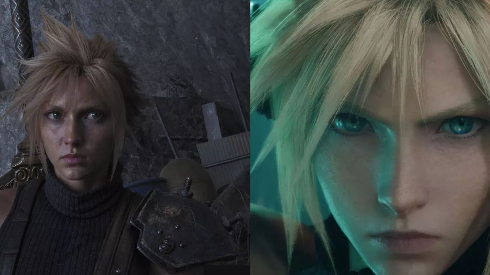

Une découverte inattendue dans NBA 2K27
Fin août 2026, des utilisateurs ont repéré une DLL associée au rendu neuronal de NVIDIA dans une version en accès anticipé de NBA 2K27. Cette découverte a rapidement relancé les discussions autour de DLSS 5, avant même que la technologie soit officiellement disponible dans le jeu.
Il faut toutefois rester précis : la présence d'un fichier dans une build ne signifie pas que toutes les fonctions sont activées ou prêtes à fonctionner dans n'importe quel jeu. À ce moment-là, NVIDIA n'avait pas présenté cette DLL comme une version universelle de DLSS 5.
🧩 Qu'est-ce qui a fuité ?
Les fichiers concernés semblent liés au rendu neuronal, une évolution qui ne se limite pas à l'upscaling classique. L'objectif de DLSS 5 est d'utiliser des modèles d'IA pour améliorer certains éléments de l'image, comme l'éclairage, les matériaux, les visages et les détails de la scène.
- Une DLL de rendu neuronal a été repérée dans les fichiers de NBA 2K27.
- La découverte provenait d'une build en accès anticipé.
- La technologie semblait principalement destinée aux cartes GeForce RTX récentes.
- La DLL seule ne constitue pas un support officiel pour tous les jeux.
🛠️ Les essais des moddeurs
Après la découverte, des moddeurs ont essayé de faire fonctionner cette DLL dans d'autres jeux en remplaçant ou en ajoutant certains fichiers de rendu. Des démonstrations ont notamment circulé autour de Control, avec l'objectif de voir si le rendu neuronal pouvait donner une image plus réaliste.
Ces essais ont parfois produit une image plus détaillée ou un éclairage plus impressionnant. C'est ce qui a donné l'impression que des jeux plus anciens pouvaient soudainement avoir un rendu beaucoup plus réaliste. Mais les résultats dépendaient fortement du moteur du jeu, de la carte graphique et de la manière dont le mod était intégré.
🎮 Quels autres jeux ont été testés ?

Control
Control est l'un des premiers jeux où le DLL a été testé publiquement. Les démonstrations montrent des ombres plus profondes, un éclairage modifié et des visages qui paraissent plus réalistes. En contrepartie, les essais rapportés montrent une baisse importante des performances : sur une RTX 5070 Ti en 4K, le framerate serait passé d'environ 71 à 35 images par seconde avec le rendu neuronal activé.
Final Fantasy VII Rebirth
Final Fantasy VII Rebirth a également été cité dans les tests communautaires. Le résultat est plus controversé, car le jeu possède une direction artistique très marquée. En augmentant fortement le rendu photoréaliste, le mod peut donner une image plus détaillée, mais aussi éloigner les personnages et les décors du style choisi par les artistes.
Automobilista 2
Automobilista 2 est un autre exemple intéressant, car le simulateur ne possède pas d'intégration DLSS 5 native. Un montage communautaire avec ReShade et des outils associés permet tout de même d'observer une lumière plus travaillée, des ombres plus convaincantes et une meilleure intégration des voitures dans le circuit. Le coût est important : les essais rapportent une baisse proche de 50 % des performances et des artefacts possibles.
GTA V Legacy et Half-Life 2
Des démonstrations vidéo ont également montré le rendu neuronal dans GTA V Legacy et Half-Life 2. Dans GTA V, les comparaisons mettent surtout en avant les visages, la peau et l'éclairage. Dans Half-Life 2, l'intérêt est davantage expérimental : le jeu sert à observer comment une technologie moderne modifie un titre plus ancien, avec un résultat qui peut varier selon les scènes.
Final Fantasy VII Remake
Final Fantasy VII Remake apparaît aussi dans des démonstrations RenoDX. Comme pour Rebirth, le rendu peut gagner en contraste et en détails, mais l'effet photoréaliste ne correspond pas forcément à la direction artistique originale. Ces tests sont donc utiles pour comparer, pas pour conclure que le mod améliore systématiquement l'image.
Des captures et vidéos ont aussi circulé pour d'autres jeux compatibles avec les outils de modding utilisés par la communauté. Il faut cependant les considérer comme des expériences non officielles : une image réussie dans une scène ne garantit ni la stabilité du jeu ni un bon résultat dans toutes les situations.
Comparaisons recensées par TechSpot · Test d'Automobilista 2 par BoxThisLap
🎨 Pourquoi l'image peut sembler plus réaliste ?
Le rendu neuronal cherche à améliorer la compréhension de la scène, plutôt qu'à simplement agrandir une image basse résolution. Dans les meilleures démonstrations, les changements peuvent concerner la lumière, les ombres, les reflets, les visages et la stabilité de certains détails en mouvement.
- Éclairage et ombres potentiellement plus naturels.
- Meilleure présence des détails sur les personnages et les matériaux.
- Image plus stable dans certaines scènes.
- Résultat très variable selon le jeu et son moteur graphique.
⚠️ Une technologie encore loin d'être universelle
Les tests communautaires ont aussi montré les limites de cette fuite. Dans certains essais, le coût du rendu neuronal faisait fortement baisser le nombre d'images par seconde. Des artefacts ou des problèmes de compatibilité pouvaient également apparaître, car le jeu n'avait pas été conçu pour utiliser cette technologie.
Il ne suffit donc pas de copier une DLL dans le dossier d'un jeu pour obtenir automatiquement DLSS 5. Le moteur, les shaders, les fichiers de configuration et les fonctions exposées par le jeu doivent correspondre. Les résultats publiés par les moddeurs sont intéressants, mais ils ne remplacent pas une intégration officielle.
📅 De la fuite à la sortie officielle
NBA 2K27 est ensuite devenu le premier jeu annoncé comme compatible avec DLSS 5 et son rendu neuronal 3D-guidé. Cette sortie a donné un contexte aux fichiers repérés quelques jours plus tôt : la fuite révélait probablement des composants préparés pour cette intégration, sans pour autant transformer immédiatement les autres jeux en titres compatibles.
📝 Ce qu'il faut retenir
- La fuite venait d'une build de NBA 2K27 et concernait une DLL de rendu neuronal.
- Des moddeurs ont réutilisé cette DLL dans d'autres jeux pour observer son potentiel.
- Les résultats pouvaient améliorer le réalisme visuel, mais avec un coût important en performances.
- Ces manipulations étaient expérimentales et pouvaient provoquer des bugs ou des incompatibilités.
- Le support officiel dépend du jeu, du moteur et du matériel compatible.
🔗 Sources
TechPowerUp · TechSpot · VideoCardz · NVIDIA